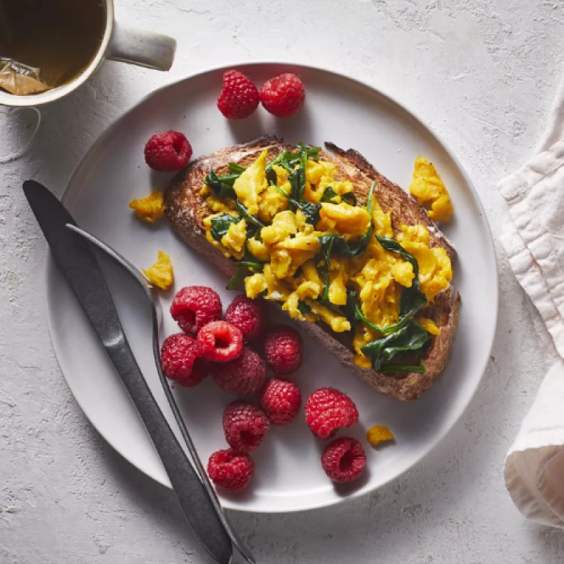
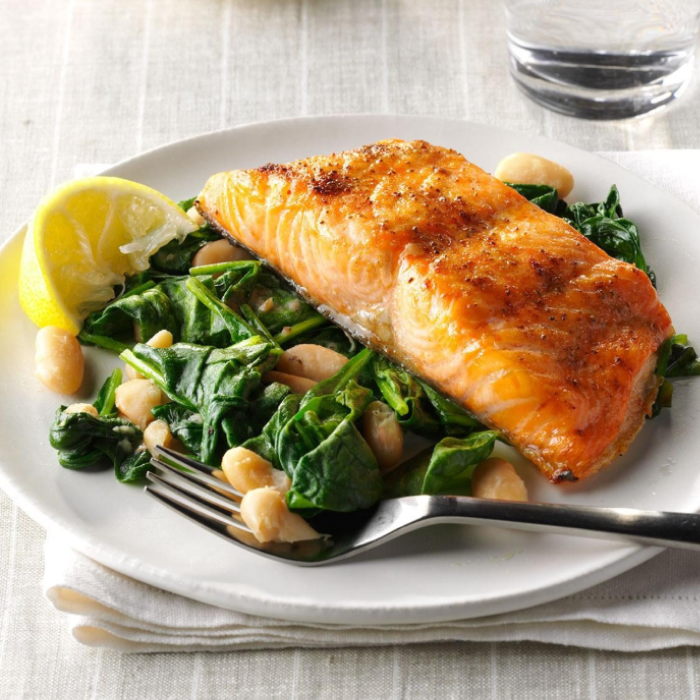
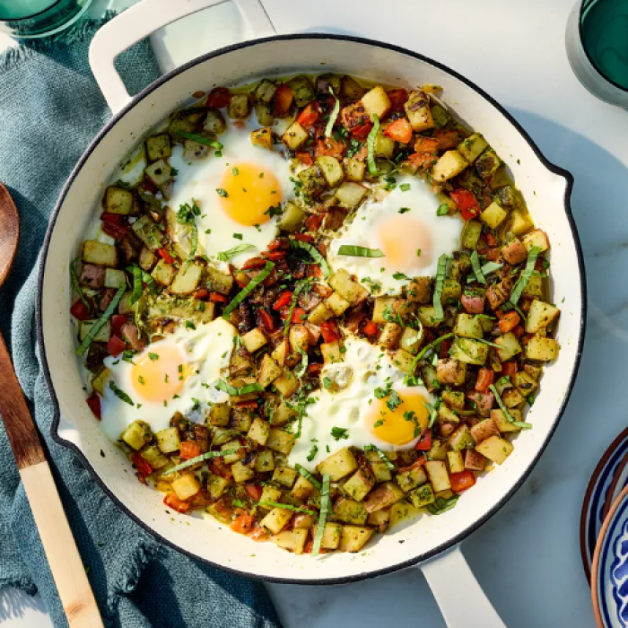
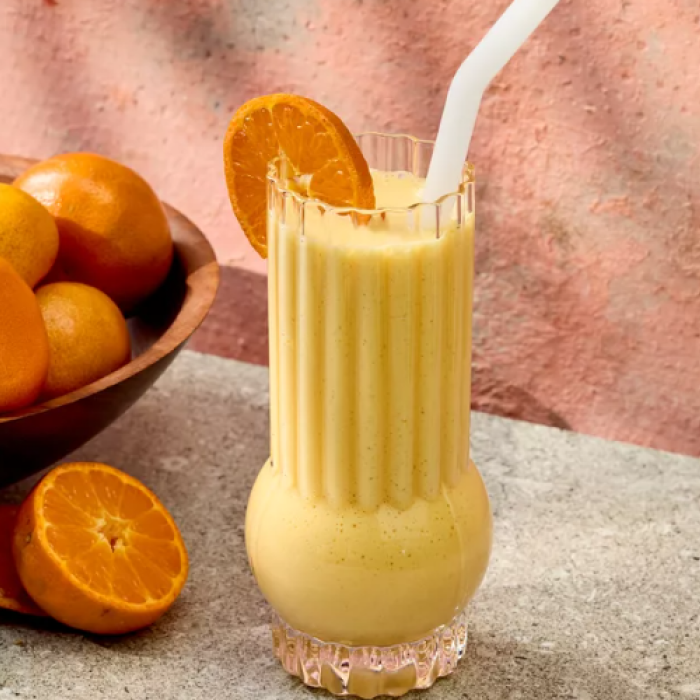
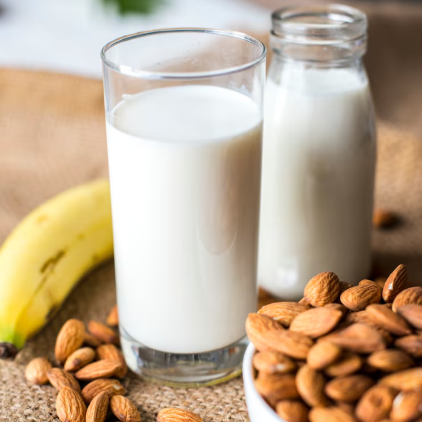
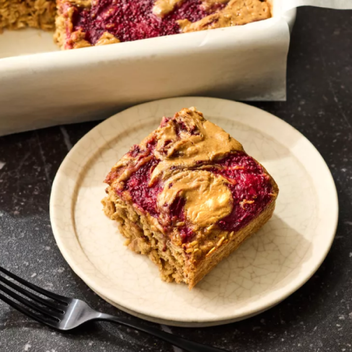

1. tell us your dietary needs
2. Select the duration of your mealplan
No selection
3. Some Samples Food Choices Below:
Breakfast
Provides essential energy and nutrients to start the day, supporting brain function and metabolism. It can help maintain stable blood sugar levels, which is important for seniors.
Lunch
Offers a larger portion of proteins, vitamins, and minerals needed for muscle maintenance and overall health. A balanced lunch helps sustain energy and prevents overeating later.
Dinner
Provides another opportunity for protein, fiber, and essential nutrients to maintain strength and digestive health. Eating dinner at a reasonable time helps with sleep and overall routine.
Morning Snack
Helps prevent energy dips between breakfast and lunch, maintaining alertness and reducing the risk of fatigue. It can also support nutrient intake, especially if smaller meals are easier to manage.
Afternoon Snack
Keeps energy levels steady and prevents late-day hunger, which can reduce the temptation for less healthy choices. It also supports consistent nutrient intake.
Late night Snack
Can prevent nighttime hunger and support stable blood sugar overnight. Choosing light, nutrient-rich snacks can aid digestion and prevent discomfort during sleep.
you have selected 0 meal types per day
4. Your chosen meal plan
We wil deliver freshly cooked meals that align with you Carb Smart and vegeterian diet to you for the duration of one week.
You have chosen to have Lunch, dinner, morning snack, and afternoon snacks as part of your meal. The first delivery will begin tomorrow, Jan 1, 2026.